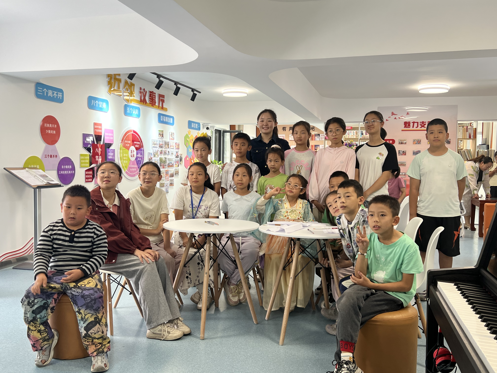
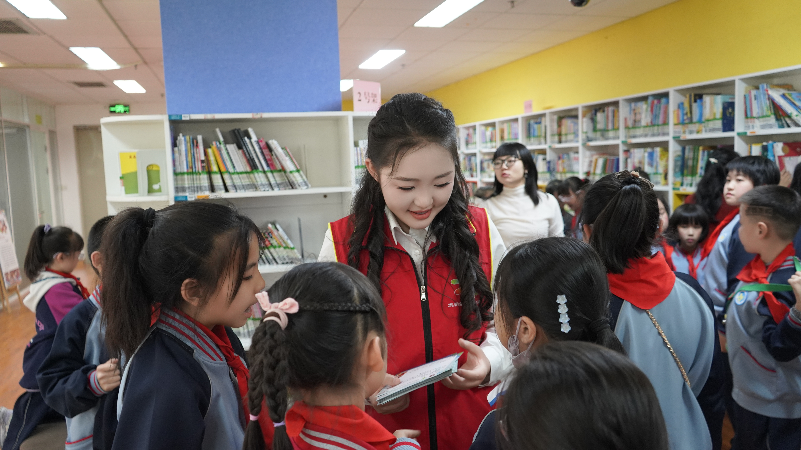

Johannes Brahms
Ballade No. 1 in D minor, Op. 10, No. 1
“Edward”

MUSIC & MATHEMATICS
Herong Bai is a pianist from Ningxia, northwestern China, who began studying piano at the age of four and currently studies with Cliburn Artist Fei-Fei Dong.
Herong Bai · Piano
Johannes Brahms
“Edward”
Ludwig van Beethoven
“Waldstein” · I. Allegro con brio
Johann Sebastian Bach
The Well-Tempered Clavier, Book II
Frédéric Chopin
I. Grave – Doppio movimento



A report on free piano lessons at Tongxinyuan Community, originally published by Yinchuan Release.
Read the original report ↗